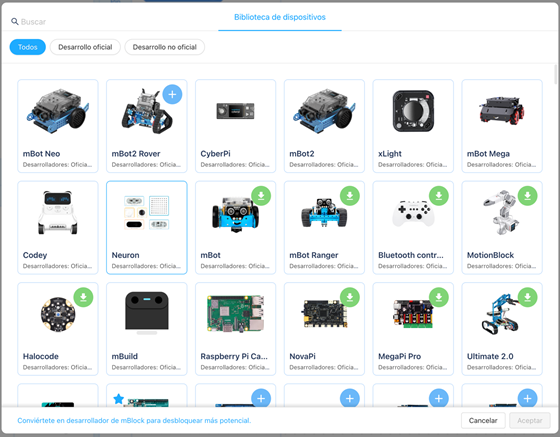
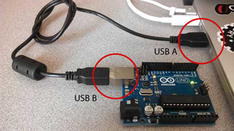
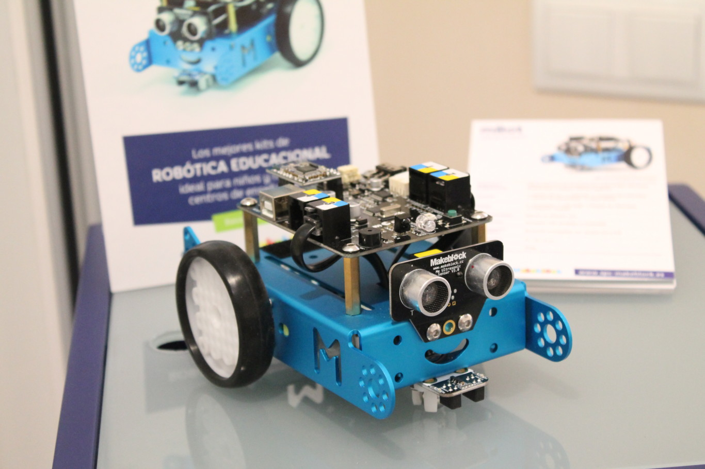
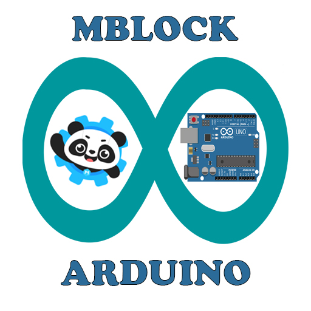

1. Contenido 1: Instalación de dispositivos
1.1 Fundamentación teórica
mBlock es una plataforma educativa que facilita el aprendizaje de programación y robótica, utilizando un enfoque visual basado en bloques, lo que permite a los estudiantes crear programas de manera intuitiva, sin necesidad de escribir código, esta herramienta es especialmente útil en el aula, ya que permite a los docentes enseñar conceptos de programación, electrónica y robótica de forma accesible, utilizando dispositivos como Arduino, micro:bit y otros kits de robótica, además, mBlock ofrece la posibilidad de avanzar a un nivel más avanzado, permitiendo la programación en Python, lo que brinda a los estudiantes la oportunidad de desarrollar habilidades más profundas en el área de la programación.
- Configuración de dispositivos en mBlock: mBlock es un entorno de programación visual que permite la integración de dispositivos como Arduino de forma intuitiva y eficiente. Esta configuración permite a los docentes y estudiantes crear proyectos electrónicos y robóticos sin la necesidad de conocimientos avanzados en código. Al integrar dispositivos, se habilitan funciones como el control de motores, la recepción de datos de sensores y la automatización de procesos. Este proceso comienza con la conexión física del dispositivo, seguida por la configuración en el software para garantizar que ambos puedan comunicarse correctamente. Esta herramienta está diseñada para ser accesible en un entorno educativo, fomentando el aprendizaje mediante la práctica y la resolución de problemas reales.

- Importancia educativa: Al instalar y configurar dispositivos en el entorno de mBlock, los docentes tienen la oportunidad de abrir un mundo de posibilidades en el aula, donde los estudiantes no solo aprenden sobre programación y electrónica, sino también desarrollan habilidades fundamentales como el pensamiento computacional, la resolución de problemas y el trabajo colaborativo. Estos procesos también fomentan una comprensión más profunda de cómo funcionan las tecnologías emergentes que están transformando el mundo.
|
- Conectar una placa Arduino a una pc:
La placa Arduino se conecta a un ordenador mediante un cable USB, permitiendo la interacción con el entorno de desarrollo Arduino (IDE). El usuario escribe el código en el IDE y luego lo sube al microcontrolador, que ejecuta el código e interactúa con las entradas y salidas, como sensores, motores y luces.

|

- mblock y Arduino
MBlock es un entorno gráfico de programación por bloque para Arduino, que permite introducir de forma sencilla la programación y robótica en el aula. Es decir, mBlock actúa como un puente entre la facilidad de programación visual y la potencia de hardware de Arduino , haciendo que los proyectos tecnológicos sean accesibles para todos.
